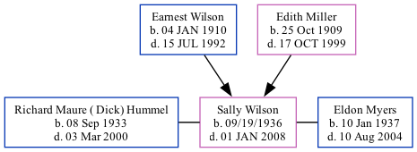

Sally Ann Myers (née Wilson) 1936 - 2008
[ Home ] | [ Surnames Index ] | [ Family History ]The child of Earnest Wilson and Edith Miller, was born in Berthoud, Co on 09/19/19361,2,3,4. She was married twice - to Richard Maure ( Dick) Hummel (on Sep 4, 1954 in Berthoud) Eldon Myers (on Mar 17, 1979 in Berthoud). On Apr 1, 1940, she was living in South Berthoud, Larimer, Colorado, USA1.
She died on Jan 1, 2008 in Berthoud, Larimer, Colorado2,3,4 (age at Death: 71).
Parents
- Earnest D was born on Jan 4, 1910
- Edith Allie was born on Oct 25, 1909
Citations
- 1940 United States Federal Census Ancestry.com Operations, Inc. (Age: 3; Marital Status: Single; Relation to Head of House: Daughter)
- Social Security Death Index Ancestry.com Operations Inc
- United States Obituary Collection Ancestry.com Operations Inc
- Web: Obituary Daily Times Index, 1995-2012 Ancestry.com Operations, Inc.
Family Tree
Data (GEDCOM) maintained by Jay Weston Hannah, Omaha, Nebraska, USA.
Website generated by ged2site. Last updated on Jun 18, 2024.